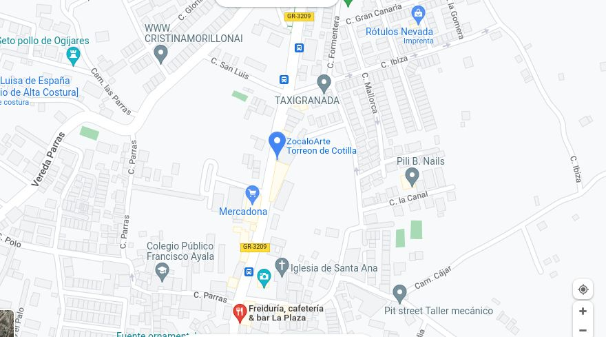

Algo que nos comparte Jacinto
¿Como llegar?
El Torreón de Cotilla es un tesoro escondido en el municipio de Ogíjares, en la Provincia de Granada, España. A pesar de su importancia histórica y arquitectónica, muchas personas no conocen su existencia. Es uno de los lugares más auténticos de la región y esconde muchos misterios aún por descubrir.
Es por eso que les invito a visitar este maravilloso lugar y descubrir todo lo que tiene que ofrecer. Si estás interesado en la historia y la cultura de la región, el Torreón de Cotilla es una parada obligatoria. Además, es una oportunidad para apreciar la arquitectura árabe y ver cómo se ha adaptado a través de los siglos. Si quieres vivir una experiencia única, no te pierdas la oportunidad de conocer el Torreón de Cotilla. Te aseguro que no te decepcionará
